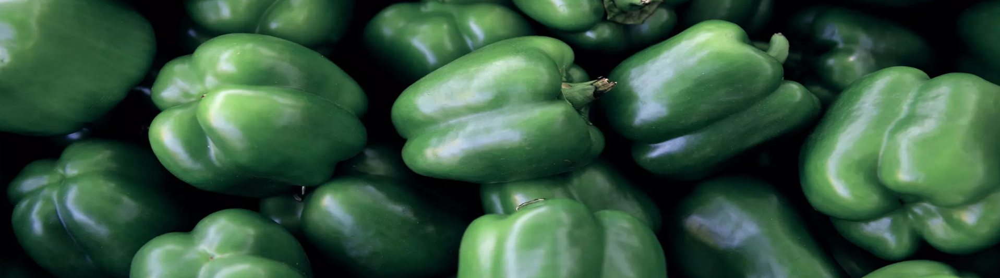

AGRIDERA SEEDS & AGRICULTURE LTD. © 2020
×××××
Agridera aspires to be among the global leaders in the cultivation, production, and distribution of sweet pepper seeds. Our dedication to research and development ensures solutions for growers and consumers worldwide.We specialize in creating disease-resistant varieties tailored to diverse markets.
Presently, our efforts concentrate on integrating resistances to diseases likeBacterial Leaf Spot and Anthracnose, alongside other soil-borne pathogens, to develop superior sweet pepper varieties.Additionally, we're actively working on enhancing resistance against emerging threats like Pepper Mild Mottle Virus.
Our breeding programs prioritize traits such as early maturity, varied sizes, firmness, vibrant colors, flavor, resistance to cracking, extended shelf life, and adaptability to various temperature ranges. We aim to offer a range of sweet peppers, including traditional bell varieties and elongated shapes, with a focus on quality and disease resilience.
Agridera's sweet pepper breeding programs concentrate on three primary categories: Bell Pepper, Pimiento de Padrón, and Cubanelle.
This program targets markets demanding high-quality sweet peppers with thick flesh, consistent shape, and excellent flavor. Our focus is on developing varieties suitable for both fresh consumption and culinary uses.
Geared towards regions with Mediterranean climates, such as Spain and parts of Italy. We prioritize disease-resistant varieties, emphasizing resistance to common pepper diseases, while ensuring superior taste and texture.
Tailored for markets valuing unique pepper flavors and culinary versatility. We aim to create varieties with mild, sweet taste profiles and distinctive elongated shape, suitable for frying, stuffing, or fresh eating.
Agridera operates through international and local distributors around the world.